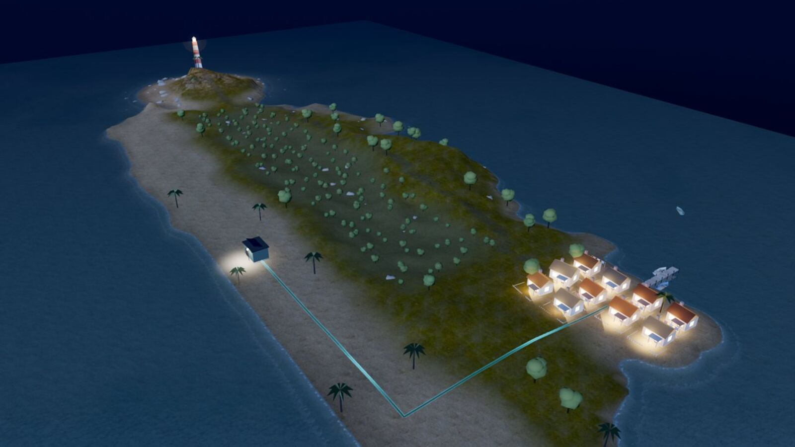
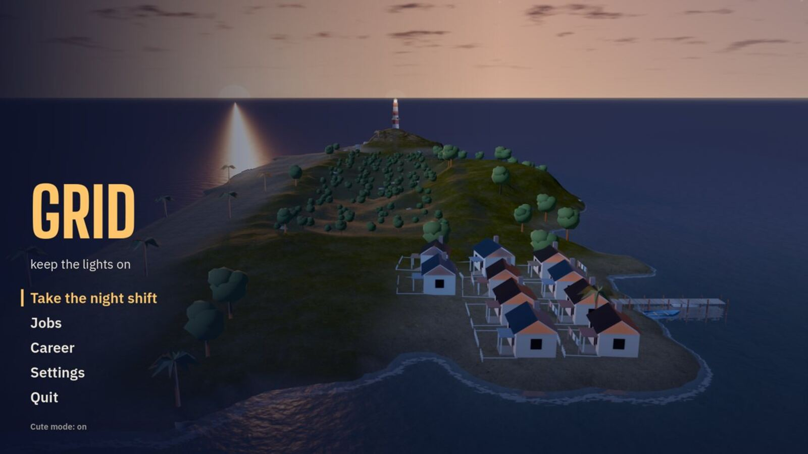

What it teaches. Ohm's law and cable resistance. You power a hamlet from a battery hut and learn what distance costs in volts, then in watts.
3 jobs: WO-01 to WO-03. All of its jobs are drawn in the new 3D look.

New look. WO-01 First Light at night: the hut, the first cable and the hamlet's windows lit by the voltage they get

New look. The title: the island bay at dusk, the lighthouse lit and the hamlet waiting for power
WO-01 First Light New look
Saltmarsh Island · the beach strip, 18:00
Goal
Light the ten-home hamlet from the battery hut. Every home must stay at 43.2 V or more from 18:00 to 23:00, inside the budget.
Budget: $4,000.
Lamps: pass the job; spend at most $2,175; spend at most $1,469 and line losses ≤ 5 %.
If it fails
Homes were below the voltage limit for 60 minutes of the night.
That is the engine's own sentence for a first-try build that misses. Yours will name your numbers.
On the radio
TOBI Ada says you start on the island, same as she did. Ten homes, one battery hut, no grid.
NIA My exams start Monday. If the lights work tonight I can actually study after dark!
Coach steps (hints that show how to build)
Evening! Nia's hamlet has bulbs but no power yet. Pick the battery hut and set it down on a peg along the beach.The hut stores the day's solar energy at 48 V. Every metre between it and the homes is a metre of copper the current has to push through.
Now grab a reel of copper and lay it from the hut to the homes. The thin reels are cheap.Copper resists a little, R = ρ·2ℓ/A. The current through that resistance costs voltage, V = I·R, before the homes see any of it.
Pull the breaker and run the night. Lamps go on at dusk.Ten homes, 48 W each. I check the voltage at the homes every 15 minutes until 23:00.
Hmm, the bulbs look sad. Fatter copper, or a hut closer to the homes?Double the copper area and the resistance halves; halve the length and it halves again. Less R, less I·R lost on the way.
ohms lawcable resistancebrownout
WO-02 Two Hamlets New look
Saltmarsh Island · across the lagoon, 18:00
Goal
Add a second hamlet of 14 homes 250 m from the hut and keep both at 43.2 V or more. Two cables from the hut, or one trunk and a branch to each?
Budget: $5,300.
Lamps: pass the job; spend at most $4,819; the third needs the same spend and every home ≥ 45 V.
If it fails
Homes were below the voltage limit for 60 minutes of the night.
That is the engine's own sentence for a first-try build that misses. Yours will name your numbers.
On the radio
TOBI Word got round. Fourteen more homes on the far side of the lagoon want what Nia's street has.
ADA Two cables or one fat trunk? Both work. One of them is cheaper, and the copper will tell you which.
Coach steps (hints that show how to build)
Choose how to reach both hamlets: two cables from the hut, or a junction box with one trunk.A trunk carries the sum of the currents of everything behind it (Kirchhoff current law).
Lay a cable on each run.The far hamlet is 250 m away: the thin cable that served the near one will drop too much voltage.
Press Run to watch the evening.Both hamlets switch on at dusk and the voltage at every home is checked.
A hamlet is dim. Thicken the run with the most current first: on a trunk, the shared part; on two radials, the dim hamlet's own.Voltage drop is current times resistance: the run that carries the most current drops the most.
kclseries paralleltrunk current
WO-03 The Price of Distance New look
Saltmarsh Island · the school on the hill, 18:00
Goal
Light the school's evening study hall and the health centre (5 kW) 1 km away, with line losses of 5 % or less. It is a long way up that hill.
Budget: $18,000.
Lamps: pass the job; spend at most $16,350; the third needs the same spend and line losses ≤ 3 %.
If it fails
The school never got power. At 48 V it needs about 104 A, and no cable can carry that across 1 km without the voltage collapsing.
That is the engine's own sentence for a first-try build that misses. Yours will name your numbers.
On the radio
NIA Exam week. The school opens its hall at night so we can study, if it has light.
VANCE One kilometre of cable on the island budget. Don't waste half the power warming the hillside.
Coach steps (hints that show how to build)
Lay a copper cable to the school, the thickest the catalogue sells.At 48 V the school needs over 100 A; no cable carries that without losing the voltage.
The hall needs 5 kW. Power is V × I, so at 48 V that is 104 A through 2 km of copper. What could you change so the same power needs less current?Look at the tray: the converter pair lifts the line to 380 V. Same power at eight times the voltage needs one eighth of the current, and since the heat is I²R the losses fall about 64 times.
Press Run.The school load is checked every 15 minutes.
Still too much heat in the line. Loss is I²R: you already cut I, now cut R with thicker copper.Line loss is current squared times resistance: thicker copper has less resistance.